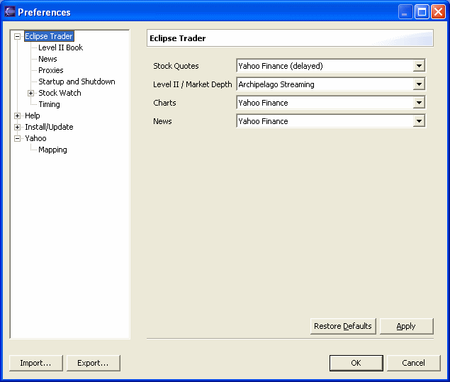
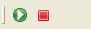

When the programs starts the Stock Watch and News List windows are completely empty. The first thing to do is to set up the data sources. To change the settings select Preferences from the Window menu, then select Eclipse Trader.

The drop down lists shows the data source names for each category for which a suitable plugin was installed. Some sources (usually those that are providing delayed quotes) do not require a registration, others are free after registration, others requires a subscription. For subscription and free after registration sources, first go to the web site and subscribe, then once you have the access codes, select the data source for Eclipse Trader. When the data receive is started a dialog will open to request your access codes.
Note: Eclipse Trader do not saves the access codes, however since the management is delegated to the data source plugin it is possible that some of them allows you to save the codes for subsequent use. Refer to the plugin's documentation for the notes on the security of the saved informations.
After the data source set up, you need to insert the stock items you want to track in the Stock Watch window. A right-click on the Stock Watch window will open a menu from which, selecting the Add item, you can insert the stock items.
Symbol
This is the symbol used to retrive the data from the sources. For the Italian
market this is the ISIN code.
Ticker
Alphabetic code assigned to the symbol. Usually it is the same as the Symbol
field. For the Italian market this is the alphabetic code assigned by Borsa
Italiana.
Note: if your stock market uses different symbols and alphabetic codes, it is possible that some sources are using the symbol and other are using the ticker to retrive the data, so it is advisable to fill both fields with the proper codes, Eclipse Trader's plugins will use the proper field automatically.
Description
Company's name or short description of the symbol. From the pull down list it is
possible to select one of the items present in the Eclipse Trader's list. The
selection will overwrite any data already present in the Symbol, Ticker and Minimum
Quantity fields.
Minimum Quantity
Minimum trade quantity. This value will be used by trading plugins to set the
trade quantity for buys and sells.
Owned Quantity
Paid Price
Total quantity and average paid price for owned shares. If used, the Stock Watch
window will calculate the gains and losses related to the owned shares (see the
columns Owned Q.ty, Paid Price, Owned Val. and Gain).
Now the initial setup is completed and it is possiblo to start the data receive by clicking on the green button on the toolbar.

If the selected data source requires a login a window will be shown to enter your personal access codes. The red button will stop the data receive.